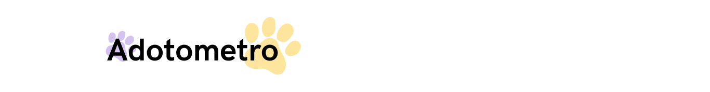

Seja bem vindo ao instituto aCãochego
Fundado em fevereiro de 2018, a partir da união de um grupo de pessoas em prol do propósito de cuidar bem e adoção de cada animal, o Instituto aCãochego atua principalmente na divulgação de organizações que estão precisando de apoio e auxilio na adoção de animais.
Hoje, são mais de 2.000 finais felizes e milhares de sorrisos acumulados, de famílias que não faziam ideia o que estava por trás daquele rabo desengonçado que abanava sem parar, daquele peludo maior do que achavam que o apartamento comportava, daquela carinha VIRA-LATA e do maravilhoso caso de amor, generosidade, gratidão, companheirismo e fidelidade que começava naquela adoção, mais digno recomeço para aqueles que um dia já sofreram muito com a indiferença dos humanos.
